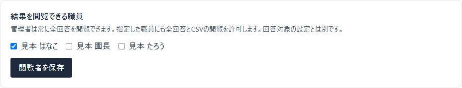
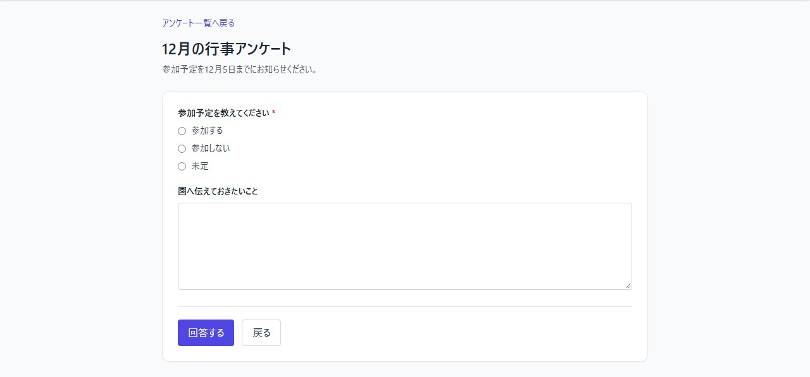
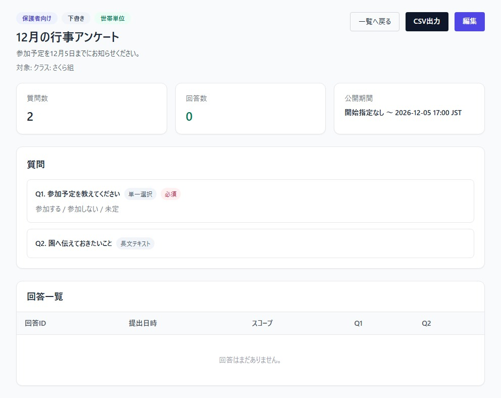
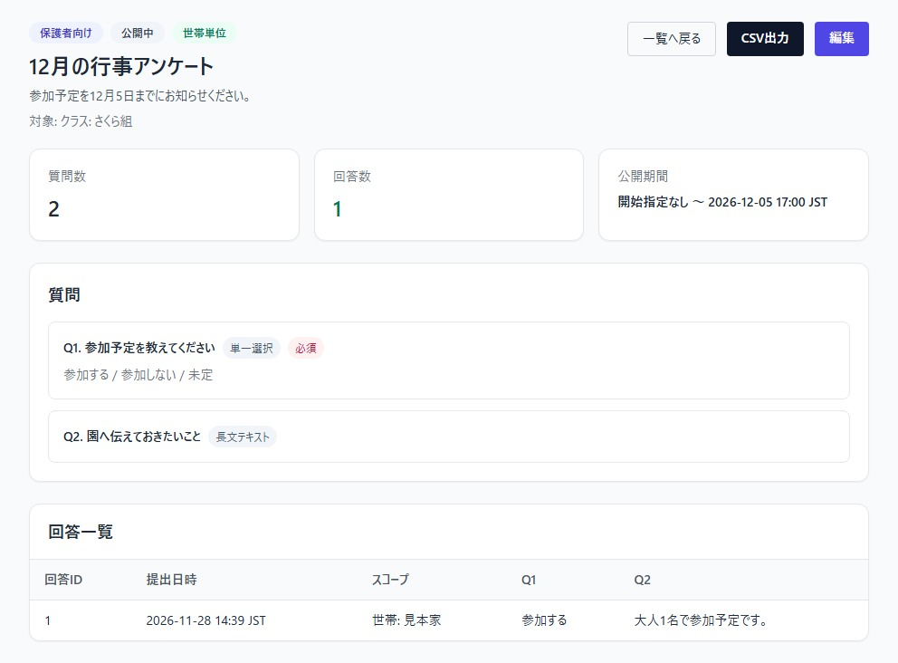
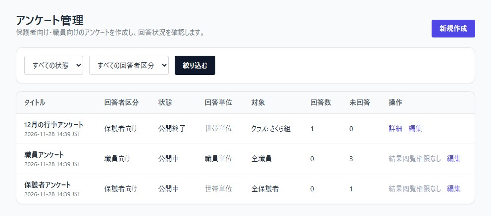

お知らせ・アンケート／作成・管理する職員向け
アンケートを公開し、回答・CSVを確認する
公開状態を変更する操作と、結果を閲覧できる職員を保存する操作を分けて説明します。
「アンケート管理」→ 対象アンケートの「編集」または「詳細」
1管理者が、結果を見る職員を設定する
管理者で編集画面を開き、「結果を閲覧できる職員」で対象者にチェックして「閲覧者を保存」を押します。この保存ボタンは、下のアンケート内容の「更新する」と別です。

保存前後の画面全体を見る


管理者は結果を閲覧できます。それ以外の職員は、ここで許可された場合に結果やCSVを見られます。作成した職員が、自動的に結果も見られるとは限りません。結果を開けない場合は管理者に確認します。
2内容を見直して公開する
編集画面でタイトル・説明・期間を見直し、状態を「公開中」にして「更新する」を押します。一覧で公開中になったことと対象を確認します。公開開始が未来ならその時刻まで回答できず、終了時刻を過ぎると回答できません。


保護者に表示される回答画面の例

3回答数と回答内容を確認する
一覧から対象の「詳細」を開きます。質問数・回答数・公開期間と、下部の回答一覧を確認できます。回答がまだない状態と、回答が入った状態を区別して見ます。




回答数は選んだ回答単位で数えます。家庭単位なら、複数の保護者がいても家庭で1件です。「未回答」の数も回答単位に合わせて確認します。画面は件数と回答の一覧で、選択肢ごとの集計グラフではありません。
4CSVを出力する
回答一覧の「CSV出力」を押して保存します。質問ごとの回答に加え、家庭・園児・職員など回答者を識別する情報が含まれます。匿名回答の資料として扱わないでください。必要な集計は、このCSVを使って行います。
- 結果を閲覧できる権限があることを確認します。
- 保存後に対象のアンケート・質問・件数を確かめます。
- 園で決めている保存先・共有範囲で扱い、不要な相手へ送らないようにします。
5受付を終える・訂正が必要な場合に対応する
編集画面で状態を「公開終了」にして「更新する」を押します。一覧で公開終了になったことを確認します。終了日時を過ぎた場合も回答はできなくなります。回答済みの記録は残り、閲覧権限がある職員が結果を確認できます。

質問や対象を間違えた場合は、元のアンケートを公開しない状態にし、正しい内容で別のアンケートを作成します。すでに回答があるときは、どちらへ回答してほしいかが伝わるよう、園の運用に沿って説明してください。